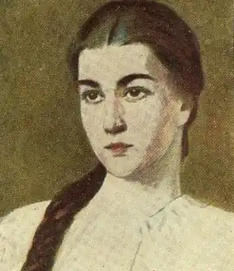
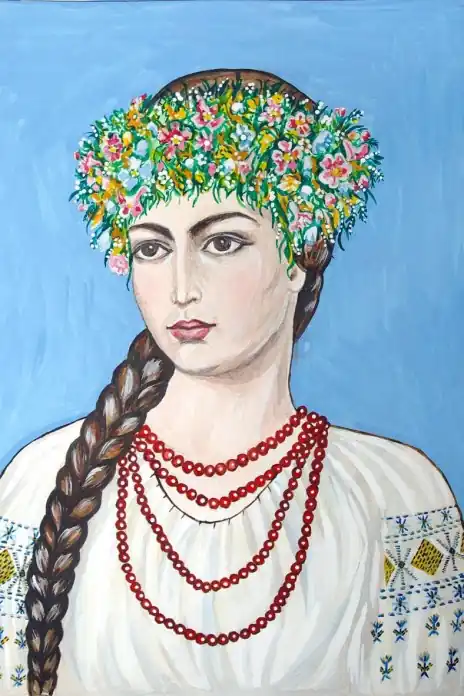
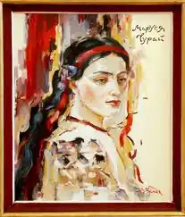
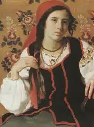

Марусю традиційно називають "дівчиною з легенди", оскільки реальність її існування документально не підтверджується. Образ "української Сапфо" склався під впливом літературних творів ХІХ — ХХ сторічч (балад, поем, драм, повістей, романів українською, польською та російською мовами), створених на основі народних оповідань. Якщо узагальнити численні версії, то вийде такий біографічний сюжет.
Жила в Полтаві приблизно у 1625 — 1650-х рр. Хата батьків стояла на березі Ворскли, неподалік від Хрестоздвиженського монастиря. Батько — Гордій Чурай належав до козацького стану, можливо, був полковим осавулом. Якось, посварившись з одним шляхтичем, запальний козак вихопив шаблю і зарубав кривдника. Після того подався на Січ, взяв участь у козацькій війні проти Польщі під проводом П. Павлюка (Бута), потрапив у полон і був страчений у Варшаві у 1638 році. Маруся жила з матір'ю Горпиною. Дружина й донька народного героя користувалися повагою полтавців. Дівчину шанували не лише через славного батька, а також через особливий дар складати і чудово виконувати пісні. Маруся була наділена неабияким талантом імпровізації — свої думки могла викладати віршами.
З біографічного нарису "Маруся Чурай, малоросійська співачка" письменника і журналіста О. А. Шкляревського (1837 — 1883 р.р.): "Маруся була справжня красуня і в суто малоросійському стилі: дрібненька (тобто невелика на зріст, трохи худорлявенькії, мініатюрна складена), струнка, як струна, з маленьким, але рельєфно окресленим під тонкою вишитою сорочкою бюстиком, з маленькими ручками і ніженьками. з привітним виразом ласкавого, матового кольору, засмаглого личка, на якому виступав рум'янець, з карими очима під густими бровами і довгими віями... Голівку дівчини покривало розкішне, чорне як смола, волосся, заплетене ззаду в густу широку косу до колін. Чарівність дівчини довершував маленький ротик з білими, як перламутр, зубками, закритий, мов червоний мак, рожевими губками... Але при цьому у Марусі було круте, трохи випукле гладеньке, сухе чоло і трохи дугоподібний, енергійний, з горбинкою ніс". Чарівна зовнішність Марусі, її незвичайна обдарованість притягували до дівчини увагу парубків. У неї був закоханий Іван Іскра — син гетьмана Якова Остряниці, мовчазний, похмурої вдачі, але винятково правдивий і благородний юнак. Але Маруся любила іншого — Григорія Бобренка, сина полкового хорунжого, красивого й видного хлопця, який виявився слабовільним і безхарактерним. Піддавшись умовлянням матері, Гриць заручився з багачкою Галею Вишняківною, донькою осавула Федора Вишняка і небогою полковника Мартина Пушкаря. Маруся тяжко переживала зраду коханого, викладаючи свої страждання в рядках пісень. Коли ж Гриць одружився з Галею, тяжко захворіла. Попри сильний, вольовий характер, пробувала накласти на себе руки: кинулася з греблі у Ворсклу, але була врятована Іваном Іскрою. Невдовзі Маруся зустрілася з Грицем та його молодою дружиною на вечорницях, влаштованих Марусиною приятелькою Меланею Барабашихою. Ця зустріч сколихнула палку натуру дівчини. Нещасливе кохання, ревнощі, ображене самолюбство зародили в Марусиній душі план помсти. Знову полонивши Гриця своєю чарівністю, вона заманила його до себе і отруїла власноруч приготовленим зіллям із кореня цикути. За скоєний злочин Марусю ув'язнили в острозі. Влітку 1652 року суд визнав її винною і віддав катам для відсічення голови. Вирок смерті скасувала грамота Б. Хмельницького про помилування, яку за якусь мить до страти (закуту в кайдани, ледь живу дівчину вже втягли на поміст) встиг доставити в Полтаву Іван Іскра. Подальша доля піснярки тлумачиться по-різному. За однією версією, після помилування Маруся сильно страждала, ходила на прощу до Києва, а повернувшись додому, рано померла від надмірних переживань і сухот. За іншою версією, Маруся пішла з дому назавжди й померла у каятті в якомусь монастирі в Росії. Марусі Чурай приписують авторство близько 40 пісень. Серед них найвідоміші: "Ой, не ходи, Грицю, та й на вечорниці", "Засвистали козаченьки", "Віють вітри, віють буйні...", "Сидить голуб на березі", "Зелененький барвіночку", "Нагороді верба рясна", "Котилися вози з гори" та інші. Ці пісні досі живуть у народі й користуються великою любов'ю і популярністю. За матеріалами: Білоусько О. А., Мокляк В. О. Нова історія Полтавщини. Друга половина XVI — друга половина XVIII століття, стор. 63 — 65.